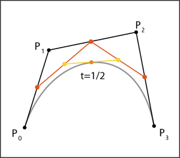

Bezier Curves
A Bézier curve is a parametric curve frequently used in computer graphics and related fields. Generalizations of Bézier curves to higher dimensions are called Bézier surfaces, of which the Bézier triangle is a special case.
In vector graphics, Bézier curves are used to model smooth curves that can be scaled indefinitely. 'Paths', as they are commonly referred to in image manipulation programs, are combinations of linked Bézier curves. Paths are not bound by the limits of rasterized images and are intuitive to modify.
As part of this assignment following tasks were achieved:
Task 1: Evaluation of a bezier curve using 'De Castlejau Algorithm'.

Task 2 : The fucntionality to define control points manually using mouse click and user inertactivity was introduced. Complex Bezier Curves of vaired shapes can be generated accorinding to one' wish.
Task 3 : By definig an axis of rotation (y-Axis) various surfaces were created to model real life objects.
To Generate the surface of revolution follow the following instructions-
- Run the code and define a curve along Y Axis by using mouse and clicking at the desired points
- Run the 'test.off' file using a software 'MeshLab'
- The desired curve is obtained